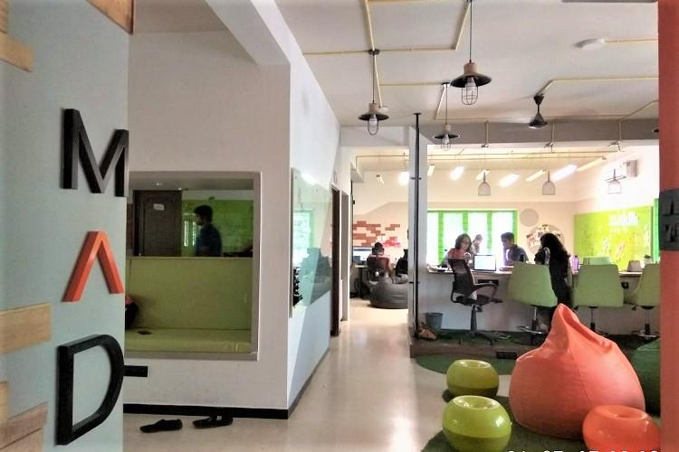

Mad Street Den is a Computer Vision based Artificial Intelligence startup that's breaking new grounds in redefining the future of Retail. Vue.ai (www.vue.ai) is it's first vertically integrated AI stack for Retail. The AI stack provides 360* solutions for the entire Retail value chain with products supporting on-site, on-app experience to marketing & social channels to operations and automation.
Besides retail, MAD Stack, the company's Computer Vision platform will scale it's core AI capabilities like object recognition, expression/emotion recognition and more across new verticals over time.
With it's team of Neuroscientists, Data Science and Deep Learning experts from Stanford, CMU and MSFT labs, the team has been serving customers across US, UK, India, Middle East and LatAm today, some of whom are world-renowned brands.